pyOMA2’s documentation!


This is the new and updated version of pyOMA module, a Python module designed for conducting operational modal analysis. With this update, we’ve transformed pyOMA from a basic collection of functions into a more sophisticated module that fully leverages the capabilities of Python classes.
The module now supports analysis of both single and multi-setup data measurements, which includes handling multiple acquisitions with a mix of reference and roving sensors. We’ve also introduced interactive plots, allowing users to select desired modes for extraction directly from the plots generated by the algorithms. Additionally, a new feature enables users to define the geometry of the structures being tested, facilitating the visualization of mode shapes after modal results are obtained. The underlying functions of these classes have been rigorously revised, resulting in significant enhancements and optimizations.
Check out the project source.
Schematic organisation of the module showing inheritance between classes

Quick start
Install the library:
pip install pyOMA-2
You’ll probably need to install tk for the GUI on your system, here some instructions:
Note
Please note that this is still an alpha release, this project is under active development.